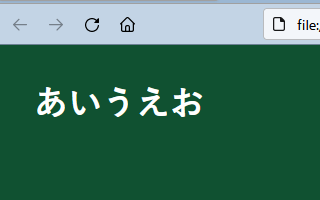

ホームページファイルの作成方法
ホームページで使用するファイルにはさまざまな種類がありますが、なかでもメインとなるのはHTMLファイルとCSSファイルです。
ほかにも、.htaccessやjs、cgi、xml、php、jpg、あるいはrobots.txtなど様々な拡張子のファイルがありますが、htmlファイルとCSSファイルさえあればサイトは機能します。
あまり推奨されてはいませんが、スタイルシートのCSSについてはHTMLファイル内の<style></style>の箇所に直接記述することもできるため、最低限、htmlファイルさえあれば、サイトを表示させることができます。
htmlファイルの作り方
htmlファイルはファイル名を「任意の英数＋.html」としてファイルを作成します。大文字でも表示されますが、英数小文字やハイフン「‐」などを使用するのが一般的です。
例えば、メモ帳を開いてHTMLタグを入力します。
次に、「ファイル」 → 「名前を付けて保存」の箇所から「すべてのファイル」を選択し、ファイル名を「index.html」として「UTF-8」の文字コードで保存します。

これでHTMLファイルが完成しました。
このファイルをクリックするとページが表示されるはずです。
レンタルサーバーのファイルマネージャーで作成する際もほぼ同じ手順になります。
このファイル名については、そのページ内容をあらわすような名前で作成することをおすすめします。
例えば、犬のページを作成する場合は「dog.html」とか、そんな感じです。01.htmlなどの番号順で作成する人も多いですが、そのページ内容を表す文字列で作成した方が検索エンジンで認識されやすくなります。
ただし、トップページ用のファイルについては、「index.html」で作成するのが一般的です。
→ index.htmlとトップページの関係
無料ホームページやレンタルサーバーなどでは、デフォルトの状態で既にこのindex.htmlが作成されていることも多いですが、その内容を上書きする形で作成していくよいでしょう。
スタイルシート作成でデザインを一括指定
スタイルシートのファイル名は、styles.css や index.css など「任意の英数＋.css」で作成します。
例えば、以下のようにCSSタグでデザインの指定をするスタイルシートを作成します。
このスタイルシートは、色彩やレイアウト幅などの見栄えの部分を指定するファイルになります。
ファイル名は「style.css」などとしておきます。
すると、CSSファイルも作成されました。
この状態で「index.html」ファイルのHEADタグにて、スタイルシートの「style.css」を参照するように指定します。
メモ帳の「ファイル」 → 「開く」から「すべてのファイル」を指定すれば、「index.html」ファイルを編集できるはずです。
上記のHTMLファイルのheadタグ内に以下のように指定します。
<link rel="stylesheet" href="CSSのURL">
スタイルシートの書き方の詳細については、こちらのページをご参照ください。
スタイルシートの作り方
すると、サイトのデザインがstyle.cssの内容に変更されました。

上記の白黒のデザインから色がついて見やすくなったと思います。
以降、デザインを変更する際には、このCSSファイルの内容を書き変えるだけですみます。
個別ページを作成した際にも、それぞれのHTMLファイルに、このCSSファイルを参照するように指定しておけば、スタイルシートの設定を変えるだけでホームページ全体のデザインを一括して変更することができます。
とりあえず、トップページのindex.html とデザインを指定するcssファイルのふたつのページを時間をかけて作成するとよいでしょう。